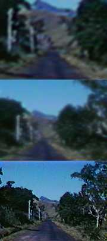

|
 |
It
only took Travis three days in San Francisco to organize his fake I.D.
Some Chinese guy not only gave him a passport, drivers license and social security number, but a military record as well (Marines, honorable discharge). Travis thought he remembered enough grunt talk from Saigon to pull it off. He hot-wired an old Studebaker and set off for Iris' New York. He picked up hitchers for company, but in case of trouble, he kept a .44 taped under the dash. |